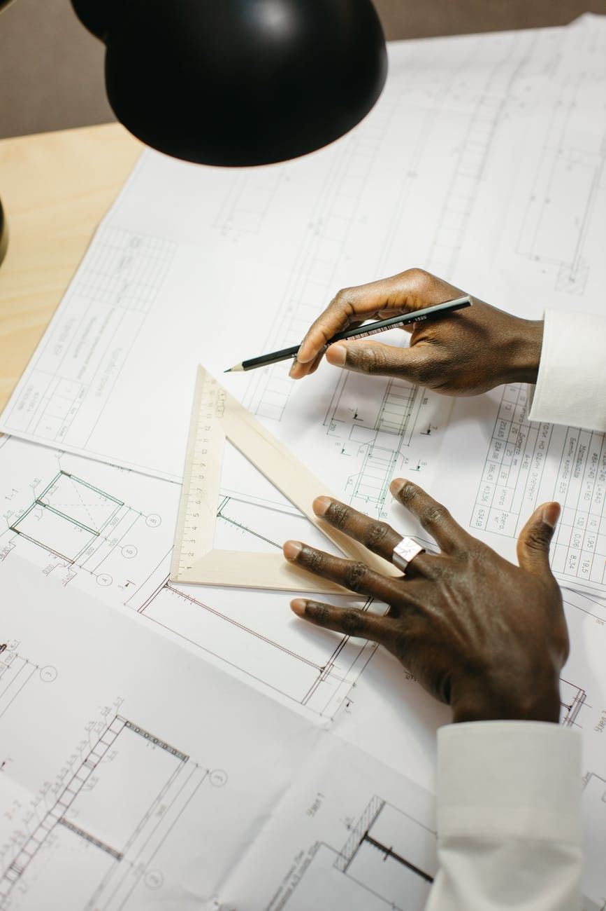

- Born:
- February 20, 1901 — Kuressaare, Estonia
- Died:
- March 17, 1974 — New York City, US (age 73)
Kahn divided buildings into served spaces, the rooms where people work and gather, and servant spaces, the shafts and stairs that carry air, water and people to them. The split became visible structure.
He worked in brick and concrete with exact joints and left the formwork marks in place. Light came in through cut openings, light wells and vaults.
He built little until his fifties. Most of the major work dates from the last fifteen years of his life.